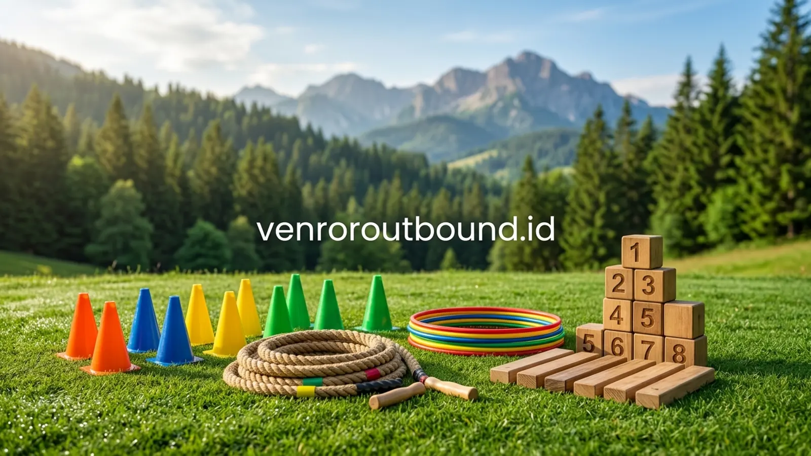

1. Mengapa Tim Mengalami Kejenuhan Akut Setelah Menyelesaikan Projek Besar?
Jawaban singkat: Mengatasi burnout karyawan setelah rilis projek besar dapat dilakukan melalui kegiatan rekreasi aktif di alam terbuka. Permainan outbound seru yang berfokus pada kolaboratif menyenangkan terbukti mengembalikan kesegaran mental, meredakan ketegangan antaranggota tim, serta membangun kembali antusiasme kerja secara bertahap tanpa menambah beban psikologis baru.
Momen rilis atau serah terima projek skala besar selalu menjadi pencapaian yang membanggakan bagi setiap divisi kerja. Namun, di balik keberhasilan memenuhi tenggat waktu peluncuran, tersimpan realitas beban kerja yang menguras stamina fisik dan psikis tim. Selama berminggu-minggu bahkan berbulan-bulan, para profesional di bidang teknologi informasi, tim operasional, riset, maupun divisi pemasaran berjibaku dengan jadwal lembur, penyesuaian bug mendadak, serta koordinasi intensif tanpa henti.
Kondisi ini kerap memicu fenomena post-project fatigue atau kejenuhan mendalam. Energi tim berada pada titik terendah, sementara antusiasme untuk menyambut projek berikutnya belum sempat terbentuk kembali. Jika manajer proyek dan tim HRD langsung menimpakan sasaran baru tanpa memberikan fase jeda penyegaran yang bermakna, risiko penurunan motivasi kerja dan gesekan komunikasi internal akan meningkat secara signifikan.

Membangun Sinergi Tim: 5 Permainan Outbound Kreatif & Kolaboratif
Kumpulan simulasi fun games interaktif yang efektif mencairkan suasana dan membangun kekompakan tim.
2. Tanda-Tanda Penurunan Energi Tim yang Wajib Diwaspadai Manajemen
Mengenali sinyal kelelahan sebelum berkembang menjadi hambatan operasional adalah tanggung jawab penting para pemimpin regu. Beberapa indikator umum yang sering muncul setelah fase sprint intensif antara lain:
- Komunikasi Kaku dan Formal: Diskusi kelompok yang sebelumnya cair berubah menjadi pasif atau cenderung defensif saat membicarakan agenda tindak lanjut.
- Penurunan Daya Inisiatif: Anggota tim cenderung bekerja sebatas instruksi minimal dan enggan mengeksplorasi solusi kreatif baru.
- Jarak Emosional Antarbagian: Munculnya sekat-sekat kecil antardivisi akibat gesekan kerja selama masa-masa kritis proyek.
Untuk memulihkan dinamika kelompok yang segar, pendekatan rekreasi bersama di lingkungan luar ruang memberikan ruang transisi yang sangat diperlukan. Melalui program fun games outbound perusahaan, staf diajak melepaskan atribut jabatan sejenak dan berinteraksi secara santai di tengah atmosfer alam terbuka yang menyejukkan.
3. Mengapa Konsep 1-Day Outbound Menjadi Alternatif Penyegaran Paling Efisien?
Tidak semua organisasi memiliki fleksibilitas waktu untuk mengadakan liburan kerja (corporate retreat) berhari-hari di tengah padatnya kalender bisnis tahunan. Dalam situasi ini, program permainan outbound seru berdurasi satu hari (1-day program) hadir sebagai format yang sangat adaptif dan solutif.
Beberapa keunggulan mendasar dari format penyegaran satu hari meliputi:
- Efisien Terhadap Waktu Operasional: Kegiatan dapat dilaksanakan pada akhir pekan atau dialokasikan satu hari kerja tanpa mengorbankan produktivitas harian kantor.
- Perubahan Atmosfer yang Cepat: Berpindah dari ruang berpendingin udara dan monitor komputer ke hamparan rumput hijau pegunungan langsung merangsang relaksasi sensorik peserta.
- Fokus pada Pelepasan Beban: Alur kegiatan dirancang tanpa evaluasi performa kerja yang kaku, melainkan murni untuk tawa bersama dan interaksi non-formal.


Kenapa Team Building Kantor Sering Gagal? Ini 3 Kesalahan Fatal HRD
Ketahui faktor krusial yang harus dihindari panitia agar kegiatan luar ruang tidak membosankan bagi karyawan.
4. Karakteristik Permainan Outbound yang Tepat untuk Fase Recharge Tim
Menyusun modul kegiatan pasca projek membutuhkan kepekaan tersendiri. Jangan sampai aktivitas luar ruang yang diniatkan untuk relaksasi justru menjadi beban fisik yang melelahkan atau menimbulkan kompetisi destruktif antarpeserta. Permainan yang ideal untuk kebutuhan ini harus memiliki kriteria berikut:
- Aturan Sederhana dan Cepat Dipahami: Hindari game dengan logika berlapis yang menuntut analisa kognitif berat. Pilih permainan yang memicu refleks gerak lucu dan tawa spontan.
- Keterlibatan Semua Peserta Secara Setara: Struktur kelompok dibentuk acak lintas level kepemimpinan agar hierarki kantor mencair secara natural.
- Kolaborasi Tanpa Tekanan: Fokus akhir adalah keberhasilan bersama menyelesaikan tantangan ringan, bukan mencari kelompok yang paling dominan.

Vendor Outbound Perusahaan di Batu Malang: Panduan SOP & Legalitas
Kriteria pemilihan provider terpercaya yang menjamin keselamatan, legalitas resmi, dan kenyamanan peserta.
5. Langkah Praktis Panitia Internal Menyusun Agenda Gathering
Bagi Project Manager atau HR Specialist yang bertindak sebagai inisiator acara, berikut tahapan taktis yang dapat dijalankan untuk mempersiapkan agenda outbound penyegaran:
- Tentukan Tanggal di Titik Jeda: Pilih waktu 1–2 minggu setelah rilis sistem selesai dan fase pemantauan awal stabil.
- Pilih Lokasi yang Asri dan Mudah Dijangkau: Kawasan dataran tinggi seperti Batu Malang menyediakan banyak opsi venue dengan panorama alam indah dan fasilitas memadai.
- Gunakan Fasilitator Berpengalaman: Serahkan alur pemanduan simulasi kepada tim fasilitator luar ruang agar seluruh karyawan—termasuk para pimpinan—dapat ikut bermain sebagai peserta penuh.
6. Memulai Siklus Projek Baru dengan Semangat Kolaborasi yang Utuh
Kejenuhan pasca rilis projek adalah respons alami dari tubuh dan pikiran yang telah bekerja pada kapasitas maksimal. Mengakui kebutuhan istirahat dan memfasilitasinya melalui kegiatan bersama di alam bebas adalah langkah bijak dalam menjaga keberlanjutan motivasi sumber daya manusia.
Dengan menyajikan permainan outbound seru yang inklusif dan menyenangkan, perusahaan tidak hanya menyegarkan kembali stamina tim, tetapi juga memperkokoh jalinan komunikasi dan rasa saling percaya yang menjadi modal utama dalam menaklukkan tantangan kerja berikutnya.
Segarkan Kembali Energi Tim Anda Sebelum Memulai Projek Baru
Diskusikan konsep fun games santai dan venue outdoor yang paling sesuai dengan kebutuhan divisi Anda. Kontak kami di +62 82211221909.
Hubungi Kami via WhatsAppPertanyaan Sering Diajukan (FAQ)

Arby Ardiansyah
Praktisi pengembangan SDM dan perancang program experiential learning dengan pengalaman lebih dari 8 tahun memfasilitasi ratusan kegiatan outbound korporat, BUMN, dan program penyegaran tim di seluruh Jawa Timur.